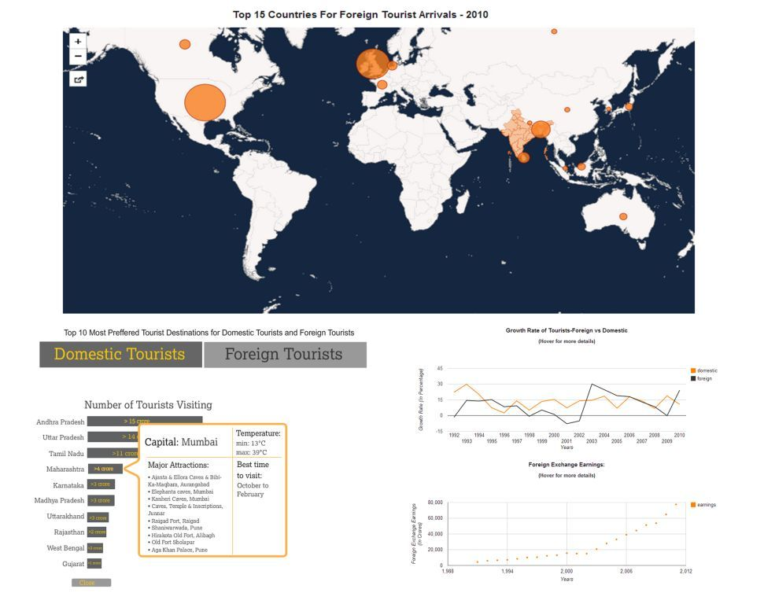
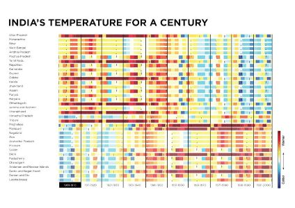

This semester as a part of our course Information and Interface Design, we had a 5 week module on Information Visualization-II, a continuation of our 1st module – Information Visualization-1 previous semester.
With an urge to learn something new we wanted to deal with bigger datasets and come up with an interactive visualization by the end of the module. The module took off with a 2 week session on Data Modelling by Sridhar Pabbisetty where we dealt with where could we find datasets, how do we sanitize our dataset, how could we relate the data to form a story and finally visualize the data. We all had chosen our datasets; I chose India’s tourism data. The dataset was taken from India Tourism statistics report-2010, Incredibleindia.org and data.gov.in.
Following is the snapshot of the actual visualization. The main visualization can be found here, this is the first iteration of the visualization as result of which it is a nascent stage right now, a lot of refinement is yet to be done.
The next session was on information taxonomy which was a reading assignment on which we had to write a document of our understanding. The article I got was from The New Yorker- The Checklist by Atul Gawande The document I wrote can be found here.
This was followed by a reading assignment. We were assigned Nature’s Point of View articles. I along with Shweta were assigned the topic of Design for Data Figures by Bang Wong on which we had to write a paper along with some examples relevant to us. The paper we wrote can be found here.
During the mid of the module we had a session by Prof. Jignesh Khakhar where we learnt about Principles of Interface Design.
We also had a 1 day workshop by S. Anand from Gramener where he showed us his work and how he had abstracted large amounts of data from varied places. This was followed by an assignment where each team took a dataset to visualize, I teamed up with Senthil and we came up with this visualization.
At the end of this module we had a 5 day workshop on Geovisualization taken by Arun Ganesh an IID alumni, this was one of the most interesting, productive and fast paced workshops, I learnt how to create a schematic map, how to contribute to Wikipedia and make changes in Open Street map project, learnt about cartography tools like QuantumGIS, Tilemill, Mapbox and Leaflet. This workshop helped me a lot in my Tourism Visualization. Following are the outputs of this workshop:
About Me
Anushka Srivastava
An Information and Interface Design student at National Institute of Design, Bangalore.
A learner at heart, interested in learning anything new :)
e-mail: anushka_sr@nid.edu
My Portfolio